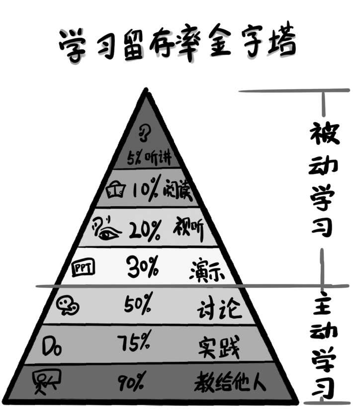
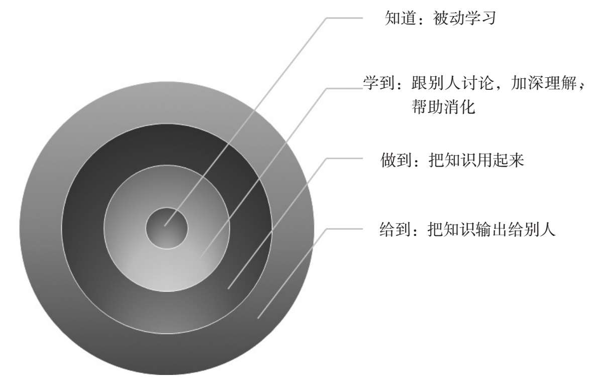

某个清闲的周末，我约了几个朋友喝茶。席间聊到职场现状，其中一个朋友感慨现代职场竞争越来越激烈，稍不留神就会职位不保，被人替代。为了在职场站稳脚跟，持续保持竞争力，他最近一年花了不少钱购买付费课程，报名参加线下培训班，但是学习效果却不尽如人意。聊到这里，在场的其他朋友也纷纷表示深有同感。
为什么大家花了那么多金钱、时间和精力，却总是收效甚微呢？
在前面的内容中，我向大家介绍过自己总结的“学习金字塔”模型，它包含做事效能、做人乐趣、自我认知和世界观这4个方向。1969年，美国教育学家艾德格·戴尔也曾以语言学习为例，提出了著名的“学习留存率金字塔”模型（Cone of Learning）。
艾德格·戴尔的“学习留存率金字塔”模型理论认为，人们采用学习方法的差异会大大影响学习内容的平均留存率，从而影响学习效果的好坏。以下是他的实验结果：
如果人们通过听课完成学习，两个星期后，能记住的学习内容只有5%；
如果人们通过读书完成学习，两个星期后，能记住的学习内容只有10%；
如果人们通过看视频完成学习，两个星期后，能记住的学习内容只有20%；
如果人们通过观看别人的演示完成学习，两个星期后，能记住的学习内容有30%；
如果人们通过跟别人讨论完成学习，两个星期后，能记住50%的学习内容；
如果人们通过实践操作完成学习，或者学完后立即实际运用所学内容，两个星期后，能记住75%的学习内容；
如果人们一边教别人一边学习，两个星期后，能记住90%的学习内容。

值得一提的是，为了验证这个理论的准确性，美国缅因州国家训练实验室特意做了参照实验，也得出了相同的结论。这个实验结果告诉我们：学习效果在30%以下的几种学习方式最常被我们使用，听课、阅读、观看视频等都属于被动学习；而学习效果在50%以上的几种学习方式——讨论、应用、教学等，则是主动学习。效果孰高孰低，不言而喻。
然而，很多人都有一种误解，似乎只要持续地读书，50本、100本、200本，就能从量变到质变，并使自己忽然变得厉害起来。其实，如果我们一直在低效果的学习层次上进行重复，我们也终将失望地发现：自己“知道”的越来越多，但“学到”的还是乏善可陈，“做到”和“给到”的更是寥寥无几。“knowing thename of something”（知其然）和“knowing something”（知其所以然）不是数量上的差别，而是“被动”和“主动”两种不同的学习思维造成的结果。
不过，在我看来，这个实验结果并非警告我们不要采用学习效果较差的那几种被动式学习方法，毕竟大部分人接触新知识、学习新内容，主要还是依靠读书、听课、观看视频等方式。但我们必须明白，被动学习很容易使人停留在舒适区，满足于仅仅“知道”一些知识。

为了将所学知识真正内化为自己的一部分，我们必须要有意识地采用学习效果更好的几种主动学习法，通过跟别人讨论，从闭门造车到寻求反馈，深度消化，变“知道”为“学到”；通过实践操作，将所学的知识最终都用到事情上去，变“学到”为“做到”；通过教授别人，知其然并知其所以然，向更多人输出知识，变“做到”为“给到”。
值得庆幸的是，我们并不需要穿过漫长的幽暗隧道才能完成从被动学习到主动学习的跳跃，我们完全可以转变思维，直奔更高效的学习方法。
带着问题讨论，从知道到学到
很多人都有这样的体验：自己闷头苦学好几天也无法解决的问题，跟别人讨论后却突然恍然大悟。俗话说得好：“三个臭皮匠，赛过诸葛亮。”你之所以会有这种感觉，是因为你在跟别人讨论学习内容时，往往可以通过多个视角来理解知识，从而加深对知识的理解，达到深度消化的目的。
那么，跟别人讨论有没有技巧呢？在分享具体的技巧之前，我先分享一个自己的亲身案例。
我儿子今年4岁，就读于一所国际私立幼儿园。当初在为孩子选择幼儿园的时候，我也曾在国内私立幼儿园和国际私立幼儿园的两个选项中纠结。但是，当我带着孩子参加了这所幼儿园的一节体验课后，便立即决定报名。
我之所以这么快做出决定，是因为这所国际私立幼儿园的教学方法很有特点。相比国内大多数私立幼儿园采用的“老师讲，学生听”这种传统授课模式，这所国际幼儿园采用的则是讨论式教学。老师上课时会在教室里放置一张椭圆形桌子，她和十来个小朋友围坐在一起。正式上课前，老师会提出一个问题，并要求小朋友们通过观察、咨询、调研等各种方式思考这个问题。课堂上，小朋友们可以自由发表对这个问题的看法，当他们的观点不同时甚至可以展开激烈辩论。老师不会以一个裁判的角色判断对错，也不会强调标准答案，只会在大家表达完自己的看法后稍加补充或引导。
这所国际私立幼儿园采用的正是“带着问题讨论”的教学方法。带着问题讨论的教学方法，看上去很随意，其实对学生和老师都有很高的要求。首先，正式上课前，学生要有充足的时间去观察和调研老师提出的问题；其次，带着问题讨论的教学方法还要求学生具备一定的学习兴趣，具有自主学习和自我管理的能力，否则同学之间的讨论只会停留在问题表面，无法达到更深层次的交流与探讨；最后，老师在提问和点评的时候，既要有技巧，又不能说得太多，否则学生就会丧失主动思考的积极性。
其实，这种带着问题讨论的教学方法对成人学习也同样适用。但是，为了保证学习效果，在和别人讨论时，我们需要注意以下几点：
第一，学习的目的最好是为了深度了解一个具体问题。我们可以首先找到和这个问题相关的同伴或者同事，发动他们一起思考。
第二，在和别人讨论之前，我们需要对这个问题涉及的知识进行充分学习和思考。只有这样，讨论才会更有质量。
第三，最好选择在该问题上的知识水平高于我们的同伴。只有这样，他们才能给我们更多启发性引导。
敢于“烂开始”，从学到到做到
通过跟别人讨论，可以加深对学习内容的理解，真正消化知识，从“知道”到“学到”。之后，更加重要的是如何把学到的知识用起来，从“学到”变为“做到”。
要想将所学的知识用起来，最重要的一步是敢于接受“烂开始”。什么是“烂开始”呢？举一个例子，我们在学生时代参加考试时，每次拿到试卷，便会按照一般习惯从第一道试题开始做起。但是，如果第一道试题不会做的话，怎么办呢？你有可能不会一直和这道试题较劲，更不会放弃整张试卷，而是马上开始做下一道题，这便是“烂开始”——不纠结于自己是不是完全掌握了所学知识，而是直接开始把学到的知识用到实践中去。
很多人花了大量时间学习新知识，却不能把学到的知识运用到实际中去，很大一部分原因是出于畏难心理，不敢面对“烂开始”。人们在认知层面学习一个新知识比在行为层面去实践它要容易得多，因为在认知层面，我们只需要读几本书，听一套课，看几个短视频或者参加一次培训班便可以了。但是，如果把这个知识用到工作生活中，就需要我们克服行为上的惰性，一边练习一边纠正自己，从而养成长期的行为习惯。毫无疑问，这个行动的过程实在太难了。
因为畏难心理，人们往往会更加倾向于去做一件容易的事，而非价值最大的事。但学习有一个奇怪现象：如果我们不能将学到的知识运用到实践中，随着时间的流逝，它一定会被逐渐遗忘，以后被我们拿来运用的可能性也会越来越小。
反之，如果我们敢于把学到的东西及时运用到实践当中，即使学得不是非常精通，理解也不够透彻，但是通过日积月累的实践练习，学习效果往往会超出我们的想象。同样长的时间内，一个人因为畏难心理一直拖延，从未开始，而另一个人先行动起来，这两者的学习效果一定会有天壤之别。
所以，在我看来，要想从“学到知识”变为“做到知识”，最好的办法就是勇敢迈出第一步。有句俗话说“不怕慢，就怕站”，意思是我们可以慢慢地做一件事，但是不能停滞不前。在行动之前不要想太多，先行动起来就可以；想得越多，越容易畏缩不前。真正有用的思维反而是：“人至践，则无敌。”这个“践”是“践行”的“践”，只有敢于“烂开始”，才能走上践行之路，才不会为了难度不大甚至根本不存在的困难而焦虑。而一旦开始行动，我们才可以把注意力放到真正需要关注的关键点上，过去的认知和思考才会进一步升级，这也将为我们带来意外惊喜。
几年前，我夫人对学习瑜伽产生了浓厚的兴趣。起初，她以为学习瑜伽很简单，不过是跟着网上的视频练习而已。后来她才发现，观看视频时以为自己都明白的地方，其实有不少技术问题都被自己忽略了。
比如，严格的瑜伽练习对发型和衣服都有要求，而练习时如果姿势不够标准甚至会导致受伤。又如，如果想要练习空中瑜伽，练习者往往需要先在地面上练习很长时间，并达到一定身体条件才可以。再比如，瑜伽练习前后最好能够调整好呼吸，拉伸肢体，让身体慢慢适应，进入状态。在开始练习瑜伽之前，我夫人都不曾注意到这些问题，但她在练习瑜伽的过程中学习到了这些内容。有了这些改进后，她的瑜伽之路才算正式入门，后来的练习效果也变得越来越好。
“主动学习”最可爱的地方便在于此，它不需要多么详细的计划、复杂的道具，也不限定行动开始的必要条件，只要我们想，便可以在任何时候开始练习——小到和家人探讨一个共同关心的问题，在微博上和陌生人就一个热点问题辩论起来，大到站在台上开始人生中第一次演讲，都会大大提高学习效果，并使我们在成长中感受到主动学习的乐趣。而说到底，技巧虽然重要，主动学习获得的乐趣才是更加珍贵的。